A smart first aid guide for the minutes between a child swallowing something dangerous and professional help arriving.
Live demo. Type a household product in Arabic or English. It runs the app's offline matcher and protocols, right here in your browser.
Children under five are the group most exposed to accidental poisoning, and most cases happen at home with detergents, medicines and fuels. Parents rarely have first aid training. The common reflexes, like forcing the child to vomit or giving salt water, can make things worse.
Hotlines and manuals don't tell you what to do with this bottle, for this child, right now.
Search results contradict each other. Some home remedies are harmful.
An ambulance takes time. Families have no direct line to a medical person while they wait.
Whatever the parent can do with shaking hands. Each route ends in the same place: a category with a vetted protocol behind it.
Arabic normalization (hamza forms, ta marbuta, the article ال) and brand aliases, so كلوركس, الكلور and bleach land on the same entry. Near ties ask the parent instead of guessing.
Check digit validated to reject bad camera reads, UPC-A normalized to EAN-13, then matched to the product table that links each item to its active chemical.
Transfer-learned on product photos grouped by protocol category. Below 0.55 confidence it says so and falls back to the safe generic steps.
The protocol is only the starting point. The engine raises severity when red-flag symptoms are reported, puts the 997 call first when it's critical, and reads the steps out loud so the parent can keep their hands on the child.
Rinse, small sips of water, watch for an hour.
Watch for drowsiness, consult a volunteer.
Specific do-nots, call 937, volunteer now.
Call 997 first. Everything else comes after.
For a swallowed button battery, the honey step only appears when the child is over 12 months and has no recorded honey allergy.
Every protocol carries its own list of what not to do. Inducing vomiting into the lungs after kerosene is a real and avoidable harm.
Protocols, the chemical list and the library ship inside the app as a versioned bundle in SQLite. Cases opened offline sync when the connection returns.
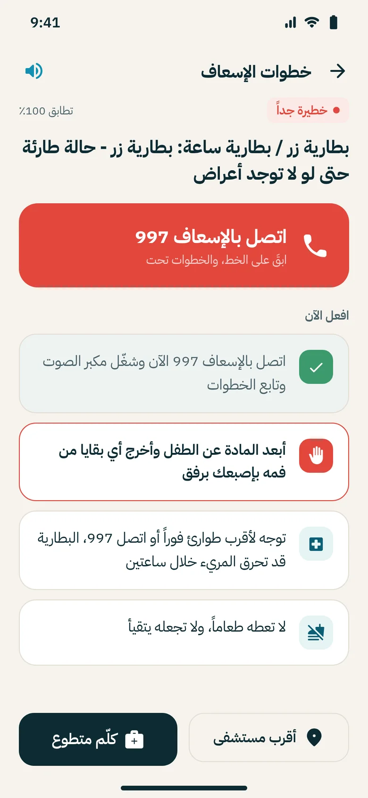
One tap sends the case to verified volunteers, sorted by severity. The volunteer sees the child's age, weight, allergies and history before answering, then chats or opens a video call. Their hours are logged for service certificates.
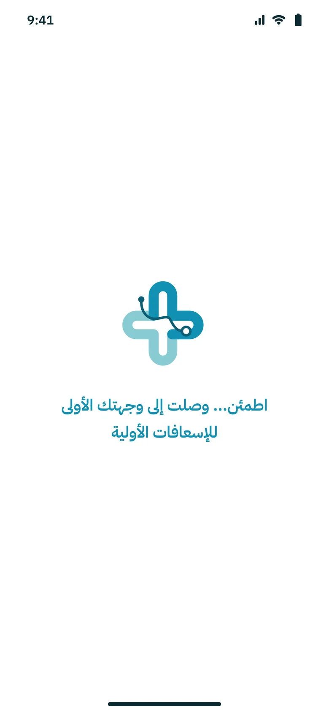
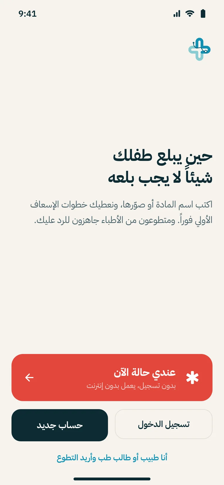
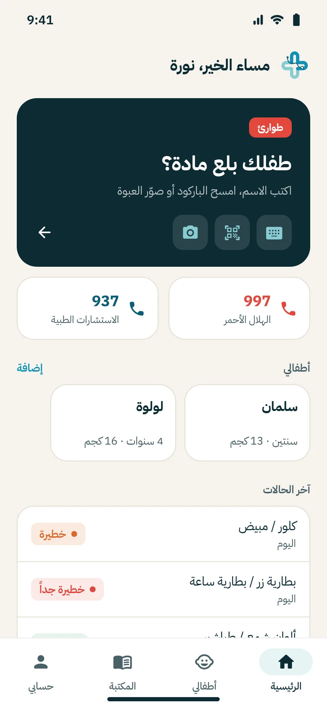
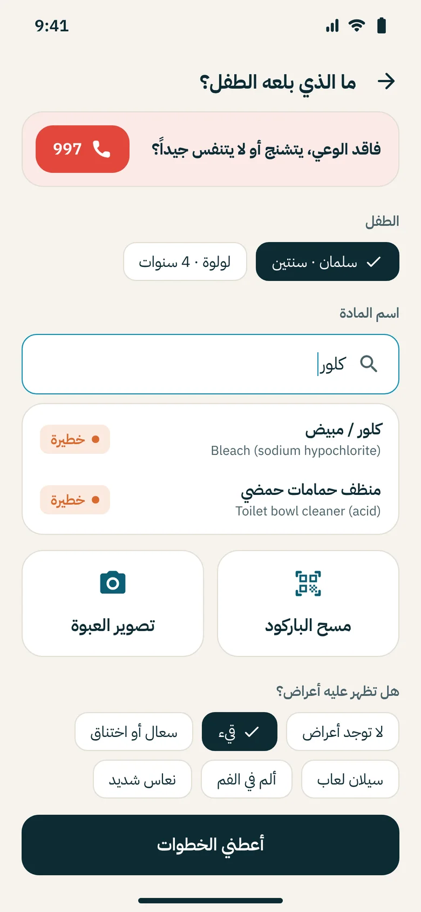
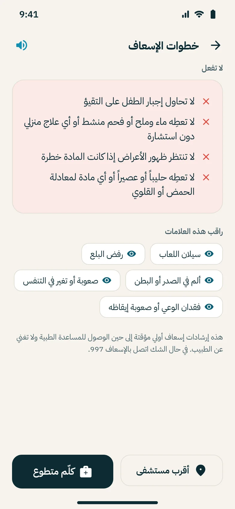
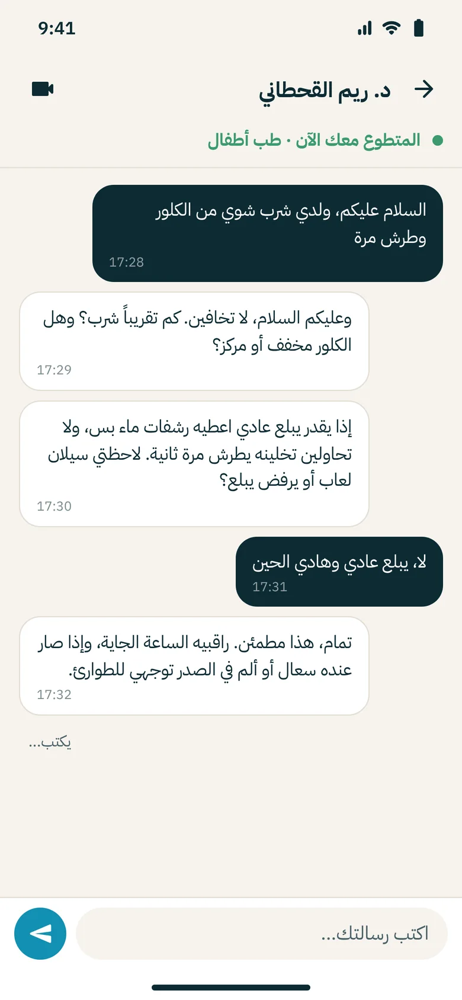
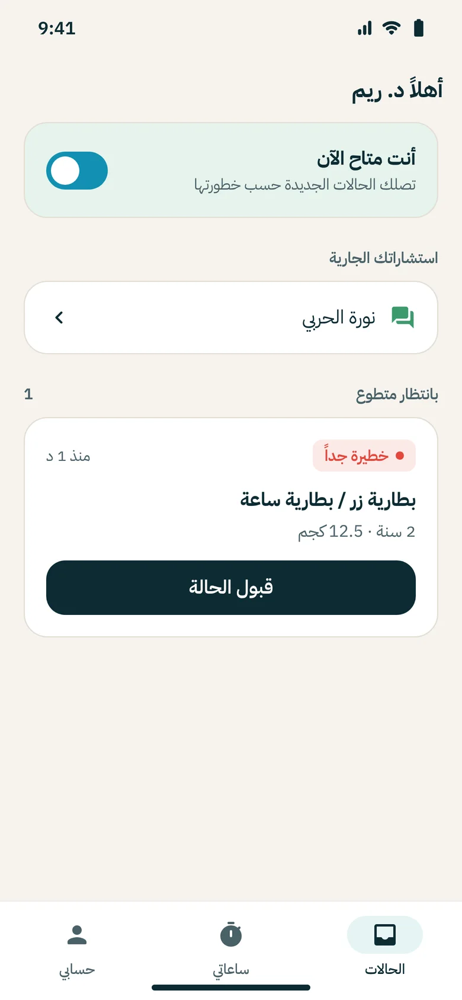
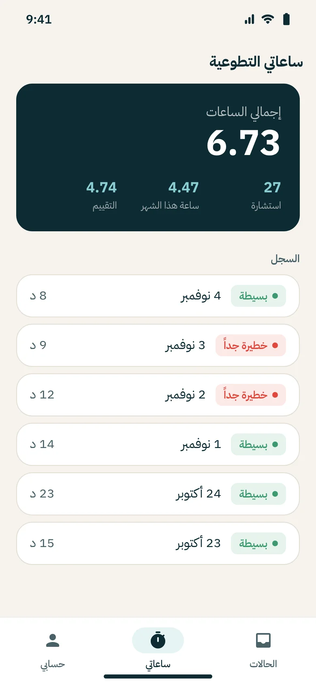
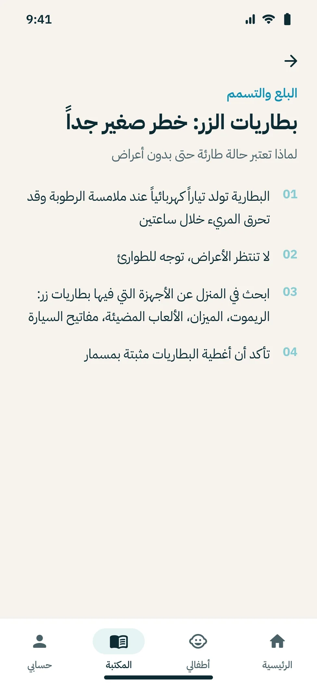
Administrators verify volunteers, maintain the chemical database the AI matches against, monitor consultations, and export anonymized reports. Every sensitive action lands in an audit log.
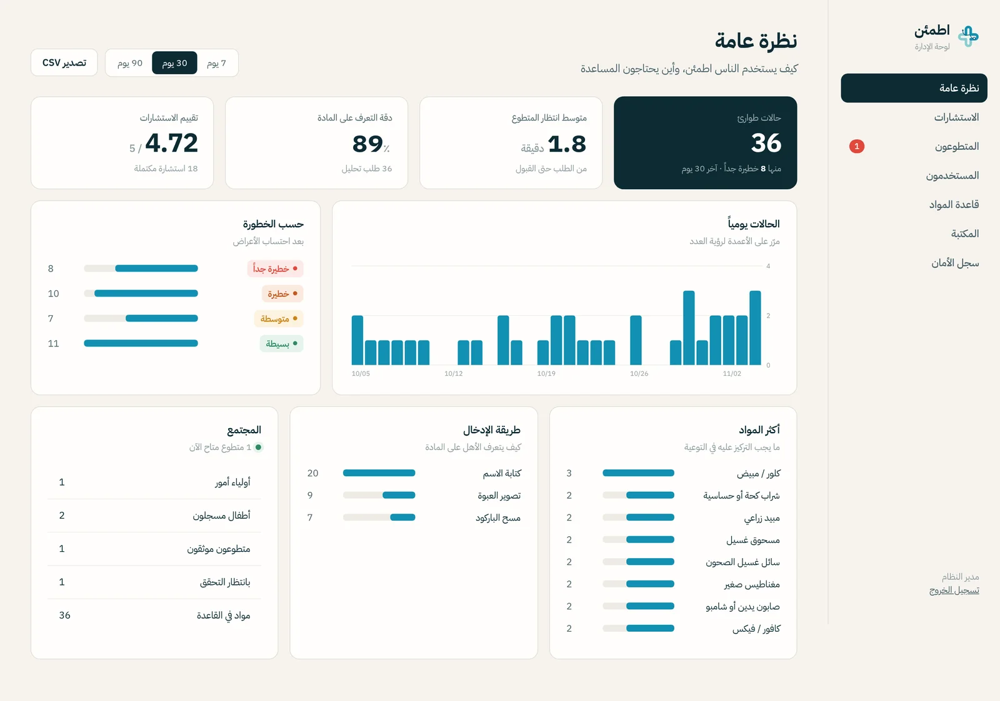
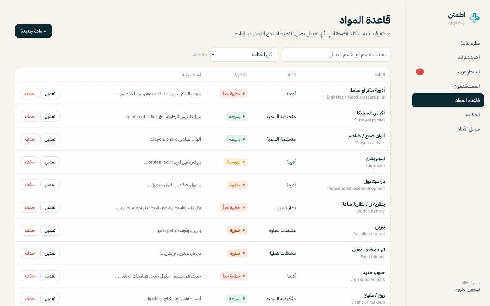
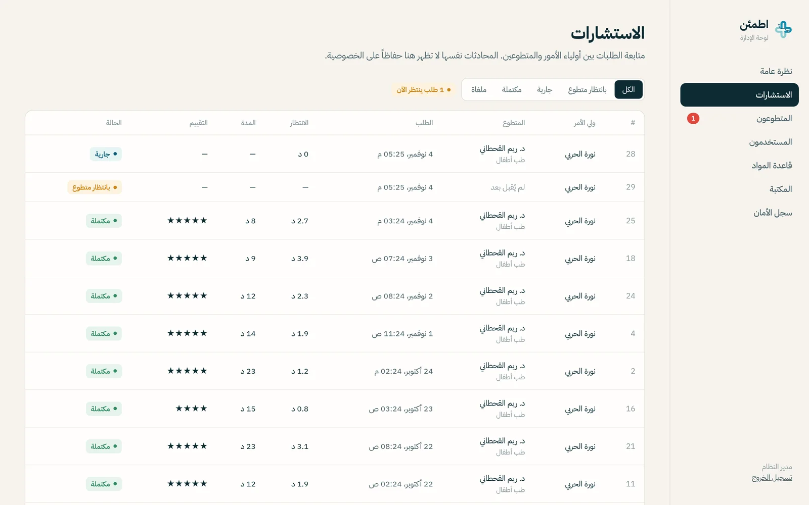
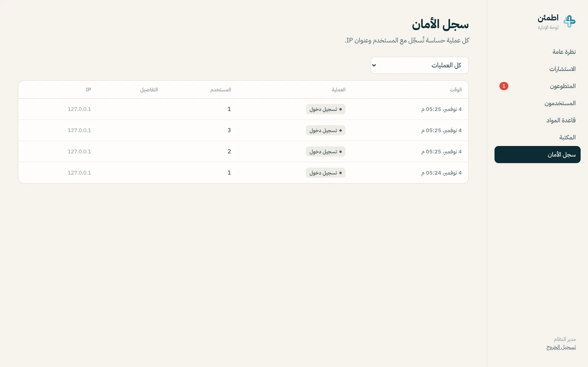
Built with Agile sprints from the requirements, ERD and sequence diagrams in the project report. When any part is unsure, the system falls back to the cautious answer, never to an empty screen.